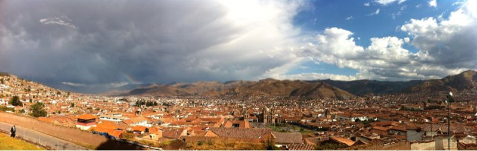

Fri, 08 Oct 2010 21:36:39 · Peru · Cusco · iglesia san blas · art · travel · city · scene · photography
la vista de cusco taken from the courtyard of

La vista de Cusco taken from the courtyard of Iglesia San Blas, a small adobe church built in 1562. After the 1650 earthquake, the church was strengthened with thicker walls and slowly became a repository of important Cusqueño arts.
Unfortunately, the church was under some renovation work when we were there, so no glimpse of the fine baroque gold-leaf altar and a pulpit that was supposed to be best example of colonial wood carving in the world.